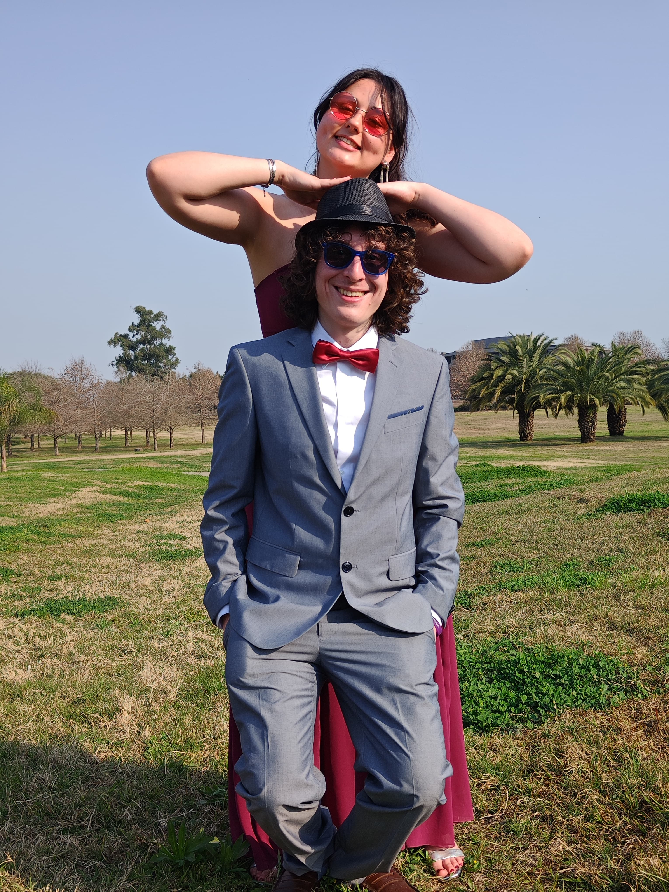

La penúltima flor de loto quiero usarla para centrarla en el tiempo que estuve en San Miguel en Julio y Agosto del año pasado.
Soy demasiado consciente de todas las cosas que he hecho mal, las cuáles me disculparé eternamente por mis comportamientos, formas de actuar y acciones.
No quiero enfocar este recuerdo en las cosas malas, sino en las buenas, como en esta foto, momentos que hemos disfrutado juntos a pesar de todo, un casamiento, unas fotos,
compartir nuestro 2° aniversario juntos, ir al vivero, pasear en el easy, comer matambre al verdeo, ver House of Dragon, jugar juegos de mesa,
compartir con nuestras familias, salir a cenar y más. Aún asi, he disfrutado cada uno de los momentos, cada segundo en el que podido compartir junto a ti, y me arrepiento no haberlo vivido mucho más.
La vida es una sola, ninguno sabe que hace en esta loca vida, ninguno sabe si lo que hace está bien o mal, y en esta vida estamos para equivacarnos y arrepentirnos miles de veces,
pero lo que jamás, pero jamás diré que fue un equivocación, es el AMARTE como te he amado y como te amo hasta el día de hoy.
Mi corazón te aún te pertenece Sofía.
Dejaré el final para la última flor, creo que la canción de esta flor te gustará mucho, espero que la disfrutes.